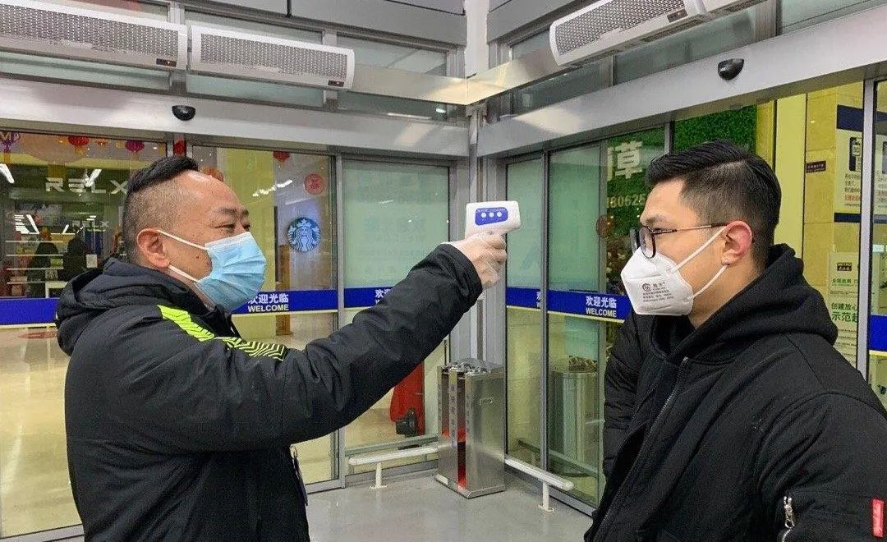

一“枪”难求，买额温枪遭遇连环涨
原文链接 备份链接 小区门口、公司门口、超市门口……人们已经习惯了被工作人员拿着额温枪测量体温这一动作。随着全国大部分地区复工复产的推进，额温枪这一原本小众的产品已经成为“硬通货”，一“枪”难求。 文 | 盛倩玉 编辑 | 小豆 （图源： …

疫情风口中的额温枪，身价匆忙间翻了数倍。在货源不足的情况下，骗子、“倒爷”、和“散户”，数个上下家构成了看似紧张繁荣的买卖链条，只是，每一个入局者都无法侥幸。
文 | 王雯清
编辑 | 钟十五 萧祷
运营 | 山山

商机

额温枪从来没有如此紧俏。
原本在天津做软件开发的孙飞发现，他的朋友圈里，有人正在叫卖额温枪，搭配上了“现货”“稀缺”的字眼。同款的东西，几个月前，他的同事在购物网站上买了一台，只花了68块，但便宜的额温枪如今怎么也买不到了，朋友圈里的标价是700元，涨了近10倍。
疫情爆发后，体温检测成了甄别疑似患者的重要关口。医用级额温枪不用接触、时间较短，依靠红外测量，在额头上一晃即过，因此成为公共场合体温检测的首选。伴随着企业复工步伐加快，额温枪的需求量也越来越大。
一“枪”难求，孙飞从中嗅到“商机”。

▲近90天额温枪搜索指数变化，从1月底疫情爆发起迅速走高。图 / 百度指数
2月9日下午，他在网上结识了周婷，对方除了卖医用防护服外，还有现货额温枪。他们协定，孙飞以278的单价购买1000台额温枪，先付10％的定金，拿到快递发货回执单后再支付全款。
“当时就想买一点然后卖了，因为不愁卖嘛。”孙飞说。也不是没有怀疑过，可卖家提供了自己的身份证，他就此放松了警惕。本来约好当晚发货，但没过多久，卖家称有别的客户付全款订了1万台额温枪，货源紧张，要求孙飞支付50％的定金。等孙飞借到钱后，50％也不行了，要全款。“后来冷静下来想，那个聊天很像刻意营造很紧张的氛围。”孙飞说。
匆忙之中，他凑齐了近28万，坐等对方发货。
在广东东莞的吴哲付出的更多。2月14日，他认识了钱宇，钱宇称自己有个上家，姓田。老田在厂里有关系，能搞到货，付清全款后，18到20号就能发货。两天后，在吴哲的要求下，钱宇出示了他和老田的合同。
“当时也怀疑，因为网上都没有，怎么他那里有。但钱宇说不用担心，可以把身份证都给你看，还可以视频验证。”吴哲回忆，“我当初只是相信他，因为他的身份证和银行卡、支付宝都给我（看过），验证是真的。”
吴哲没有想太多。今年33岁的他此前一直在郑州富士康工作，两年前来到东莞，在一家鞋厂负责采购。刚看到有人卖额温枪的时候，他便有了想法，“额温枪一般是工厂开工用，帮他们弄到，我自己也可以挣点奶粉钱，因为我小孩才一岁半。”
听说上家有货后，他在群里发布了有期货额温枪的消息，随后便有人加他好友，待出示了两份合同后，有两个下家各自打款，一个以335元的价格购买900台，另一个以340元的价格购买1000台，641500元的钱款打到吴哲账上，他和上家谈好的单价是320元，两单下来，可以从中得利33500元。
接下来的几天，吴哲以为，只需要等待额温枪和“辛苦费”一起到来，疫情期间的日子虽是忐忑，但也有了希望。

▲作为企业复工必备产品，即使价格一路走高，额温枪仍旧“一枪难求”。图 / 网络
逃难
网络上，孙飞和吴哲这些转手额温枪赚取差价的人，被统称作“倒爷”。溯其词源，实有贬义，但对于亲历其中的人，这是一个机会。
在东莞，吴哲每个月拿5000块的工资，和妻子孩子住在一起，除去五险一金、吃饭房租之类，刚刚好够开销，偶尔能存下一点，家里还有个75岁的母亲留在河南，需要照顾。他很希望能挣到这3万多块钱，缓解生活压力。天津上班的孙飞此时也正受疫情影响，困在家乡广东佛山，复工遥遥无期，他希望能靠这笔钱填补一点亏空。
可事情并未向他们所期待的方向发展。孙飞的近28万转出去，迟迟未等到发货。商定发货日期的次日，孙飞越想越不对劲，追着索要验货视频。当晚11点钟，卖方称发不了了，厂家没货了。“那不要货了，退钱。”孙飞追问，对方也不同意。他这时才意识到自己可能被骗了。
吴哲参与的交易链条要更长，损失也更多。到了约定发货的时间，上家一直没给他快递单号。傍晚6点左右，上家说被骗了，准备报警。吴哲慌了神，也去了派出所。在派出所，他见到了自己的下家石先生，让他没有想到的是，这位下家下面还有十多个下家。

▲疫情期间，女子花4万多元订购测温枪被骗。图 / 看看新闻
经过长时间的解释与商量，凌晨5点钟，吴哲终于回到家里，孩子已经睡了。他与妻子抱头痛哭，“我在想我这个家完了，小孩子怎么办，我坐牢了，老婆怎么办，家里的妈怎么办。”
冷静下来，他想到下家要求第二天必须还钱，不然就去工作单位找他。他怕有人会找妻子的麻烦，清晨6点左右，他再次出发去公安局，恳请警方把他关起来。
“没有车，我走路去。在路上看到摩托车拉客的，我让他把我带到公安分局。我到那里，门卫说你应该去派出所，我说我昨晚去了，现在能不能要求你们让我进去把情况再跟刑警说一下。门卫说只能一级一级地往上报。”
“求关”无果，他又走到公交站台，当时8点多，下家打来电话，称自己已经到了他工作的工厂里，要求吴哲在10点之前凑5万出来。他找朋友借了钱，下家收到后，又要求他一天之内还清全款，“没有钱你可以网贷。”
吴哲害怕了，既害怕与下家见面起冲突，又害怕被逼借网贷。他爬上工厂楼顶，在6层，发了一条朋友圈，突如其来的压力使他崩溃，他决定跳楼自杀。
庆幸的是，家人及时阻拦，他没有走这条路，“我老婆说，既然发生了就算坐牢她也会等我。”为了安全，吴哲辞去了工作，带着妻子离开了工厂，住在亲戚家，“过着逃难般的生活。”
起诉
2月21日，吴哲的上家拿到立案通知书，警方告知，骗钱的人已经逃到国外了。
说好的额温枪成了空头许诺，上家也好，吴哲也罢，怎么也凑不齐数十万。上家告诉吴哲，接下来，他每个月打工，如果工资有5千，他就还4千，如果有4千就给3千。吴哲跟他的两个下家协商，将上家赚的钱平均分给他们，下家不同意，称会找催债公司，也会准备起诉。
尽管在福建友通事务所律师颜双进看来，吴哲的行为并不涉嫌诈骗：他无法向下家按时交货，是一手卖家田某履行不能导致，吴哲没有非法占有下家货款的目的，可是此时的吴哲因为压力太大，睡不好，饭也吃不下去。“后悔啊，工作也丢了。”
孙飞也已经决定起诉。
只是在他报案的前一天，上家周婷先去派出所报了案，称孙飞涉嫌诈骗和洗钱。案情因此变得复杂，需要延期三十天审理。在这一个月里，他相继接到周婷丈夫和朋友的电话，他们一个自称律师，另一个表明自己是催债的，好言相劝孙飞：“各退一步，这边退一半的钱，你就当花钱买个教训。”
相比之下，孙飞和吴哲与其被称作“倒爷”，不如被当做“散户”，他们的遭遇也并非孤例。据公安部官方数据，截至2月14日，全国共破获涉疫情诈骗案件3600起，抓获犯罪嫌疑人1373名，涉案金额6691万。涉及额温枪诈骗的也被算至其中。
除了像孙飞和吴哲这样订单数量上千台的，还有很多人出于工厂复工需求、捐赠防疫物资等目的，订购了少量额温枪，他们是“倒爷”和“散户”的下家。
方志远是安徽铜陵人，2月11日，经朋友介绍，他认识了自称有额温枪可发货的陈某。方志远的工厂复工需要额温枪，再加上老家村里也有六七个关卡要体温检测，他想捐赠点物资，当日凌晨，他从陈某处购买了77台额温枪，共计15400元，约定早上安排发货。
发货单号没有如约而至，陈某称没现货，需要再等八九天。方志远等不及，要求退回货款，却遭拒绝。聊天记录中，陈某屡次威胁，“你求我帮忙卖给你的，没人绑着你，要你买、要你转账的。”这让方志远很不理解，做生意，“没有金刚钻就不要揽瓷器活。”
就在方志远转账的前一天，北京的王娟也正在帮助两位朋友采购一批额温枪。对接上卖方后，对方先是许诺当天可以发现货，随后又改口，称只有工业额温枪，也可以拿来测体温，尽快打款才能拿到货源。——而这种工业额温枪被普遍认为，未经专业调试时，误差较大。
因为急需，王娟以322的单价购买了131台额温枪，分批转账4万多。只是最终，她收到的快递单号都是空号，要求退款时也被拒绝。
需求
事情过后，孙飞联系了接触额温枪生产的朋友，得出结论，“现在只要说手里有500把（额温）枪以上的都是骗子，都不要相信。”
眼下的倒买倒卖，基本都是先预收货款，再通过各种渠道去找货，“甚至很多都是骗钱的。”额温计供应商九安医疗董事长刘毅称。第一个发布额温枪现货信息的人，会通过n次方裂变的方式，聚集海量的资金和需求，而最终因为手上无货，一直拖延发货日期。
刘毅认为，一些商家声称自己有上万只现货，这是根本不可能的。据他了解，去年全年额温枪销售量不足200万台，现在全国一个月的公共卫生防疫需求已经达到1000万台。“目前市场上所有厂家的产能都在用于政府的公共卫生防疫需求，基本上是零库存。”
医用级额温枪属于二类医疗器械，生产企业必须有医疗器械生产许可资质。而如今对企业而言，扩大产能的难点主要来自供应链的压力：额温枪的生产涉及到100多颗原材料，受到疫情影响，如今供应商缺料，再上游的原材料企业也要面对产能不足的窘状。
更重要的是，对于生产企业而言，商业需求已暂被搁置，要尽全力优先保障公共卫生防疫需求，特别是湖北疫区的需求。

▲疫情当前，许多医疗企业加紧复工生产额温枪等医疗物资。图 / 九安医疗官方微博
疫情风口中的额温枪，身价匆忙间翻了数倍。在货源不足的情况下，骗子、“倒爷”、和“散户”，数个上下家构成了看似紧张繁荣的买卖链条，只是，每一个入局者都无法侥幸。
刘毅预计，到4月份，随着额温计生产商的扩产，产能将进一步得到释放。如果疫情没有大的变化，额温计在国内的供需可能达到平衡。
而赶在疫情结束之前，“额温枪！现货！”“5万台起订！”的字眼还继续出现在卖家的朋友圈中。
（应受访者要求，孙飞、周婷、吴哲、钱宇、方志远、王娟为化名。）

每人互动
你身边有人在卖额温枪吗？

文章为每日人物原创
此文独家供稿腾讯新闻，未经允许禁止转载


每人作者
长按二维码向我转账
受苹果公司新规定影响，微信 iOS 版的赞赏功能被关闭，可通过二维码转账支持公众号。
文章已于修改
原文链接 备份链接 小区门口、公司门口、超市门口……人们已经习惯了被工作人员拿着额温枪测量体温这一动作。随着全国大部分地区复工复产的推进，额温枪这一原本小众的产品已经成为“硬通货”，一“枪”难求。 文 | 盛倩玉 编辑 | 小豆 （图源： …
原文链接 备份链接 签收之后，我把箱子拿回家，拆出一个口罩一看，傻了眼——口罩是近乎透明的，接了水之后，滴答滴答往下漏水，再看包装，上面没有任何厂家信息，合格证都没有一张。 配图 | Sipa图片社 人间骗局丨连载53 今年年初，我回到 …
原文链接 备份链接 EDITOR’S NOTE 编者按 2019年开始，面向农民工子女的实务学堂，和面向女工的木兰花开，在“银杏伙伴合作基金”的支持下，合作组织了女工写作班，上周推出了“女工笔下的疫情”系列文章。最近，又收 …
原文链接 备份链接 文｜丁畏、邢吟欢 胡迪在「舒利迭」的瓶身上，又画完了一个「正」字。 那是儿子宁宁的救命药，每天吸一次，当画完第12个「正」字，这瓶药就空了。 此处风光秀美，从院子里可以看见群山间云雾缭绕。在这个宁静小村里的每一天，胡迪 …
原文链接 备份链接 李起元说，这是他人生经历过最严重的事情了。“韩国很小，所以平时新闻也不多。现在发生了这么大的事，电视里新闻都和这个有关了。24小时，全部都是。” 文 | 王仲昀 “是的，一切在2月19日之后都变得不一样了。19日之前， …